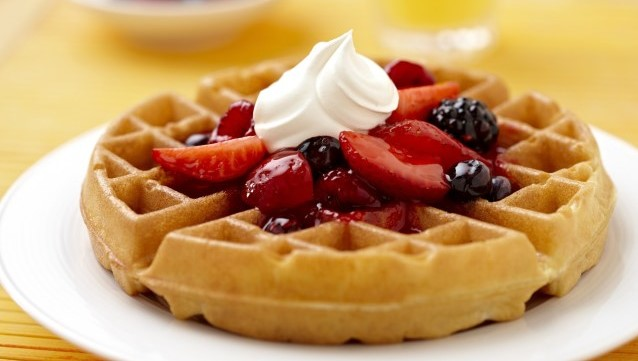

How to make Waffles

A waffle is a batter cake with a pattern of deep indentations on each side, formed by the gridlike design on each of the two hinged parts of the metal appliance (waffle iron) in which the cake is baked.
This recipe makes 10 waffles.
Ingredients
- 4 eggs (whites and yolks separated)
- 800ml milk
- 1 tsp vanilla extract
- 500g self raising flour
- 4 tsp baking powder
- pinch of salt
- 50g caster suger
- 200g melted unsalted butter (plus more for grasing the waffle iron)
Preparation
- Preheat the waffle maker
- Whisk the egg yolks with the milk and vanilla extract.
- Add in the flour, baking powder and salt and whisk further.
- Stir in the caster sugar.
- Pour in the melted butter and stir until just combined.
- In a seperate bowl, lightly beat the egg whites and carefully fold them into the mixture. Careful not to over-mix.
- Once the waffle iron is ready, lightly grease the plates using butter on a piece of kitchen towel (you may not need to do this depending on your machine).
- Ladle in the mixture.
- For my waffle iron it takes between two, and two and a half minutes for the waffles to be cooked.
- Remove the waffles, pile on your favourite toppings and enjoy.